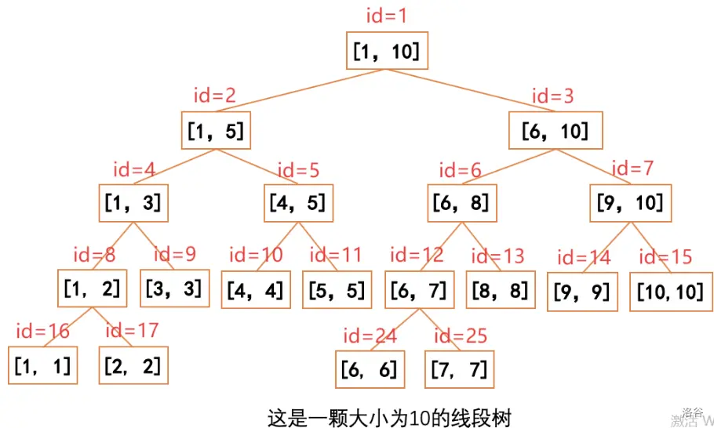

线段树
引入¶
线段树是算法竞赛中常用的维护区间信息的数据结构，可以在 \(O(\log n)\) 的时间复杂度内实现单点修改、区间修改、区间查询（区间求和、求区间最大值、求区间最小值等）操作。
线段树就是分块思想的树化，或者说是对于信息处理的二进制化——用于达到 \(O(\log n)\) 级别的处理速度，以 2 为底的对数。（其实以几为底都只是个常数，可以忽略）。而分块的思想，则是可以用一句话总结为：通过将整个序列划分为若干个小块，对于要查询的一段区间，总是可以整合成 k 个所分块与 m 个单个元素的信息的并。但普通的分块不能高效率地解决很多问题，所以作为 log 级别的数据结构，线段树应运而生。
基本结构与操作¶
区间信息¶
线段树维护的是可合并的区间信息：两个小区间的信息能在 \(O(1)\) 时间内合并成大区间的信息。
| 信息 | 合并方式 |
|---|---|
| 区间和 | t[id]=t[lc(id)]+t[rc(id)] |
| 区间最大值 / 最小值 | t[id]=max(t[lc(id)],t[rc(id)]) |
| 区间 gcd / 异或 / 按位与或 | 同理 |
也就是说：只需修改「叶子怎么填」与「怎么合并」，同一副骨架就能维护不同信息。
递归建树与存储方式¶

对于一个节点，如果它维护的区间 \([L,R]\) 满足 \(L\ne R\)，那么它一定会有两个儿子节点（我们将其称作左儿子和右儿子）。
如果这个点的编号为 \(id\)，那么它的左儿子编号为 \(id\times2\)，右儿子编号为 \(id\times2+1\)。
它的左儿子维护的区间为：
它的右儿子维护的区间为：
知道这些基础概念之后，我们就可以尝试实现一棵线段树了。
int lc(int x){return x<<1;} // 左儿子所在 ID
int rc(int x){return x<<1|1;} // 右儿子所在 ID
void build(int id,int l,int r){ // 建树 id:所在位置 l,r为范围左右端点
if(l==r){
t[id]=a[l]; // 叶子：直接存数组值
return;
}
int mid=(l+r)>>1;
build(lc(id),l,mid); // 建左子树
build(rc(id),mid+1,r); // 建右子树
t[id]=t[lc(id)]+t[rc(id)]; // 合并：父 = 左 + 右
}
注意：线段树需要开 \(4n\) 的空间
为什么要开 4 倍空间？
主要讨论一种每次将区间 \([l,r]\) 分成 \([l,m]\) 和 \([m+1,r]\) 的线段树，其中 \(m=\left\lfloor\frac{l+r}{2}\right\rfloor\)。
设一棵大小为 \(n\) 的线段树，高度为 \(h(n)\)，最大节点编号为 \(f(n)\)。
易得 \(h(n)=\left\lceil\log_2 n\right\rceil\)。
设 \(f(n)\) 为 \(n\) 的线段树中，最大节点编号。
易得 \(f(n)=2^{\lceil\log_2 n\rceil}-1\)。
我们需要找到大小为 \(n\) 的线段树所用到的最大编号。显然，使这个编号 \(2^k\) 进制下的位数最大，容易知道这个最大位数为 \(h(n)+1\)。
我们考虑从根节点走到编号最大的节点。假设当前节点编号为 \(x\)，区间为 \([l,r]\)。
若当前区间长度为偶数，则显然会走到右子树，即 \([m+1,r]\)。
若当前区间长度为奇数：
- 若右子树高度相同，则走到右子树，否则走到左子树。
- 高度相同，即： $$ h\left(\left\lfloor\frac{r-l+1}{2}\right\rfloor\right) = h\left(\left\lceil\frac{r-l+1}{2}\right\rceil\right) $$ 即： $$ \left\lceil\log_2\left\lfloor\frac{r-l+1}{2}\right\rfloor\right\rceil = \left\lceil\log_2\left\lceil\frac{r-l+1}{2}\right\rceil\right\rceil $$ 因为 \(r-l+1\) 为奇数，所以两边相差不超过 \(1\)。当区间长度为 \(2^k+1\) 时，左子树高度为 \(k\)，右子树高度为 \(k+1\)。
若 \(r-l+1\) 为正整数次幂，则易得 \(m-l\) 也为 \(2\) 的非负整数次幂。也就是说，若一次走了左子树，则以后都要走左子树，直到最后 \(r-l=1\) 时再走一次右子树。
不考虑 \(n=1\) 的情况。
易得 \(f(n)=2^{h(n)}-1\)，必然满足 \(1\le n\le 2^{h(n)}\)。
考虑一下 \(n\) 的二进制，可得 \(h(n)\) 的数量为 \(n\) 进制下最高的 \(1\) 次高的 \(1\) 之间的距离 \(d(n)\)（当 \(n\) 为 \(2\) 的整数次幂时 \(d(n)=0\)）。则相应的最大值为 \(h(n)-d(n)-1\)。有：
当 \(n=2^k\)，则 \(f(n)=2^k-1=2n-1\)。
若 \(n=2^k+r\)（\(0<r<2^k\)），则 \(f(n)=2^{k+1}-2^{d(n)+1}-1\)。要使 \(\frac{f(n)}n\) 取最大值，即 \(f(n)\) 尽量大，\(n\) 尽量小。对于确定的 \(d(n)=a\)（\(0\le a<k\)），\(f(n)=2^{k+2}-2^{a+1}-1\)，\(n=2^k+2^a\)。
当 \(a\) 取到 \(\left\lfloor\frac{k}{2}\right\rfloor\) 时，
而
于是需要开四倍空间。
本证明参考自 洛谷。
单点修改与查询¶
void add(int l,int k,int L,int R,int id){ //k为要加的值
if(L==R){
t[id]+=k;
return;
}
int mid=L+(R-L)/2;
if(l<=mid) add(l,k,L,mid,lc(id)); //修改点 l∈[L,mid]（在左儿子区间内）
else add(l,k,mid+1,R,rc(id)); //否则修改点 l∈[mid+1,R]（在右儿子区间内）
t[id]=t[lc(id)]+t[rc(id)]; //更新自己
return;
}
区间查询¶
int query(int l,int r,int L,int R,int id){ //区间查询
if(l<=L&&r>=R) return t[id];
//如果当前节点区间 [L,R]⊆[l,r]（完全被查询区间包含），直接返回
int mid=L+(R-L)/2,ans=0;
if(l<=mid) ans+=query(l,r,L,mid,lc(id));
//如果查询区间与左儿子区间 [L,mid] 满足 [l,r]∩[L,mid]≠∅（有交集），递归左儿子并累加答案
if(r>mid) ans+=query(l,r,mid+1,R,rc(id));
//如果查询区间与右儿子区间 [mid+1,R] 满足 [l,r]∩[mid+1,R]≠∅（有交集），递归右儿子并累加答案
return ans;
//返回答案
}
这样 P3374 就好了。
例题¶
P3374 【模板】树状数组 1¶
题意
已知一个数列，你需要进行下面两种操作：
-
将某一个数加上 \(x\)；
-
求出某区间每一个数的和。
参考代码
/*
Question: 树状数组1
Source: Luogu P3374
Difficulty: Green
Date: 2026/11/7
*/
#include<bits/stdc++.h>
using namespace std;
#define int long long
const int N=500010;
int n,m;
int a[N],t[N<<2];
int lc(int x){return x<<1;} // 左儿子所在 ID
int rc(int x){return x<<1|1;} // 右儿子所在 ID
void build(int id,int l,int r){ // 建树 id:所在位置 l,r为范围左右端点
if(l==r){
t[id]=a[l]; // 叶子：直接存数组值
return;
}
int mid=l+(r-l)/2;
build(lc(id),l,mid); // 建左子树
build(rc(id),mid+1,r); // 建右子树
t[id]=t[lc(id)]+t[rc(id)]; // 合并：父 = 左 + 右
}
int query(int l,int r,int L,int R,int id){ //区间查询 l,r为查询区间的左右端点你想查 [l,r] 的和）L,R为当前结点管辖区间的左右端点 id为当前编号
if(l<=L&&r>=R) return t[id];
//如果当前节点区间 [L,R]⊆[l,r]（完全被查询区间包含），直接返回
int mid=L+(R-L)/2,ans=0;
if(l<=mid) ans+=query(l,r,L,mid,lc(id));
//如果查询区间与左儿子区间 [L,mid] 满足 [l,r]∩[L,mid]≠∅（有交集），递归左儿子并累加答案
if(r>mid) ans+=query(l,r,mid+1,R,rc(id));
//如果查询区间与右儿子区间 [mid+1,R] 满足 [l,r]∩[mid+1,R]≠∅（有交集），递归右儿子并累加答案
return ans;
//返回答案
}
void add(int l,int k,int L,int R,int id){ //k为要加的值 l为要修改的位置（把 a[l] 加上 k）L,R为当前结点管辖区间 id为当前编号
if(L==R){
t[id]+=k;
return;
}
int mid=L+(R-L)/2;
if(l<=mid) add(l,k,L,mid,lc(id)); //修改点 l∈[L,mid]（在左儿子区间内）
else add(l,k,mid+1,R,rc(id)); //否则修改点 l∈[mid+1,R]（在右儿子区间内）
t[id]=t[lc(id)]+t[rc(id)]; //更新自己
return;
}
signed main(){
ios::sync_with_stdio(false);
cin.tie(nullptr);
cin>>n>>m;
for(int i=1;i<=n;i++) cin>>a[i];
build(1,1,n);
while(m--){
int op;
cin>>op;
if(op==1){
int x,k;
cin>>x>>k;
add(x,k,1,n,1);
}
else if(op==2){
int x,y;
cin>>x>>y;
cout<<query(x,y,1,n,1)<<endl;
}
}
return 0;
}
P1198 [JSOI2008] 最大数¶
题意
维护一个初始为空的数列，两种操作：
Q L：输出末尾 \(L\) 个数中的最大值（\(L>0\) 且不超过当前长度）；A n：把 \((n+t)\bmod D\) 插入末尾，其中 \(t\) 是上一次查询的答案（没查过则 \(t=0\)）。
保证 \(1\le M\le 2\times 10^5\)，\(1\le D\le 2\times 10^9\)，\(n\) 可能为负数。
和 P3374 的不同处：
- 求和 → 最大值：叶子
t[id]=k（赋值）、合并t[id]=max(t[lc(id)],t[rc(id)])、查询初值LLONG_MIN - 动态插入：空位设 \(-\infty\) 不参与比较，插入 = 单点赋值，不要每次查询都重建（会 TLE）
- 负数取模：
int x=(input%d+t1)%d; if(x<0) x+=d;
参考代码
/*
Question: [JSOI2008] 最大数 (线段树维护区间最大值）
Source: P1198
Difficulty: Green
Date: 2026/11/13
做法：线段树
*/
#include<bits/stdc++.h>
using namespace std;
#define int long long
const int M=200010;
int m,d,t1=0,cnt=0;
int t[M<<2]; // 4 倍空间
int lc(int x){return x<<1;}
int rc(int x){return x<<1|1;}
void add(int l,int k,int L,int R,int id){ // 把位置 l 的值改成 k（单点赋值）
if(L==R){
t[id]=k;
return;
}
int mid=L+(R-L)/2;
if(l<=mid) add(l,k,L,mid,lc(id));
else add(l,k,mid+1,R,rc(id));
t[id]=max(t[lc(id)],t[rc(id)]); // 合并：取较大
return;
}
int query(int l,int r,int L,int R,int id){ // 查询 [l,r] 的最大值
if(l<=L&&R<=r) return t[id];
int mid=L+(R-L)/2;
int ans=LLONG_MIN;
if(l<=mid) ans=max(query(l,r,L,mid,lc(id)),ans);
if(r>mid) ans=max(query(l,r,mid+1,R,rc(id)),ans);
return ans;
}
signed main(){
ios::sync_with_stdio(false);
cin.tie(nullptr);
cin>>m>>d;
for(int i=1;i<M*4;i++) t[i]=LLONG_MIN; // 空位=负无穷，不参与比较
while(m--){
string op;
int input;
cin>>op>>input;
if(op=="A"){
int x=(input%d+t1)%d; // 防负数取模
if(x<0) x+=d;
cnt++;
add(cnt,x,1,M,1); // 插入 = 单点赋值
}
else if(op=="Q"){
t1=query(cnt+1-input,cnt,1,M,1); // 末尾 input 个数
cout<<t1<<endl;
}
}
return 0;
}
习题¶
参考资料与注释¶
- 4 倍空间证明参考：洛谷题解
- OI Wiki - 线段树